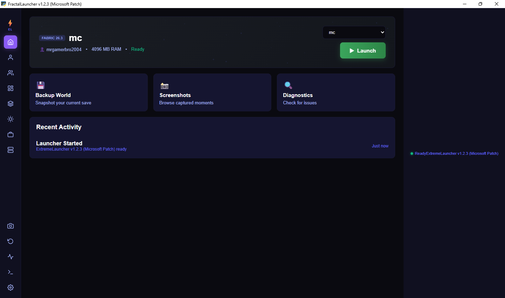
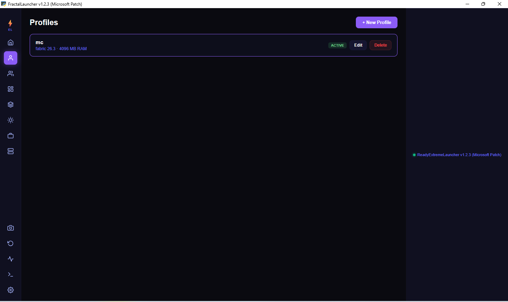
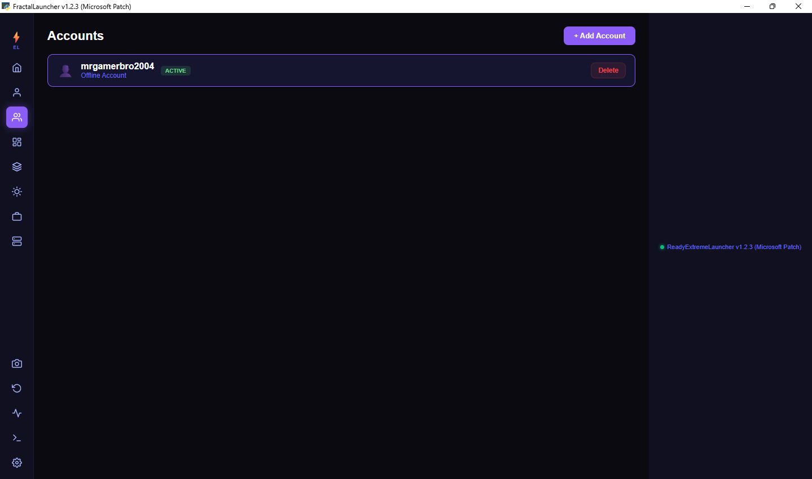
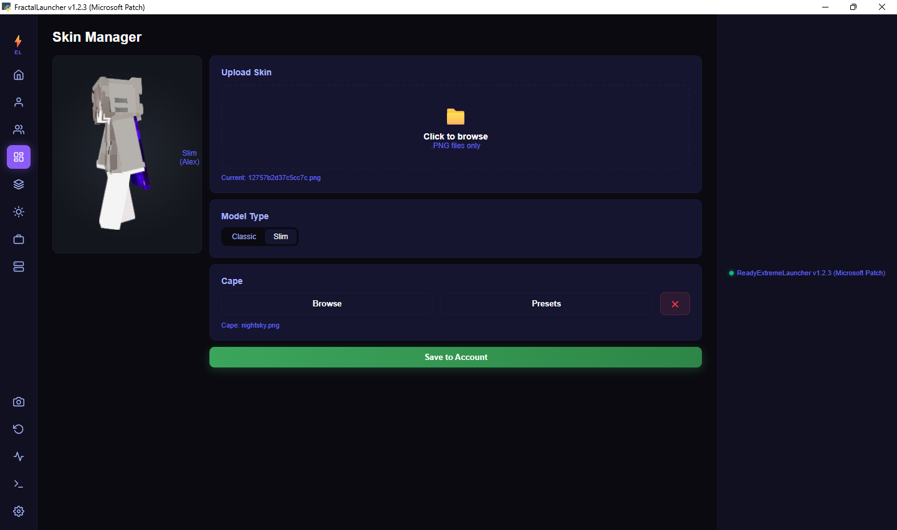
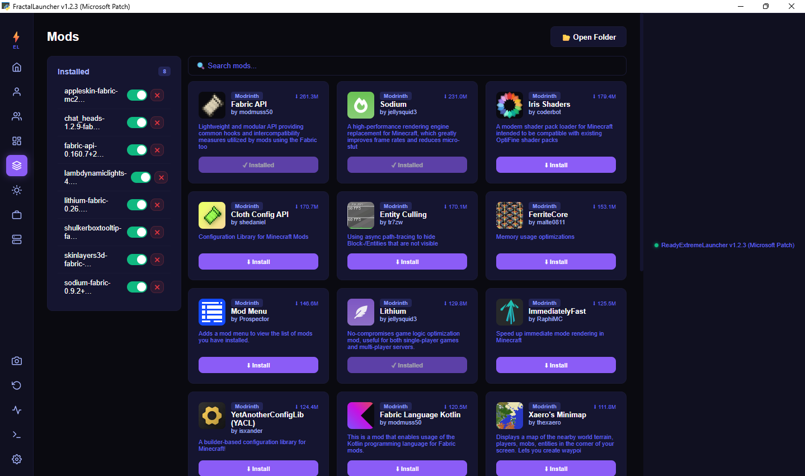
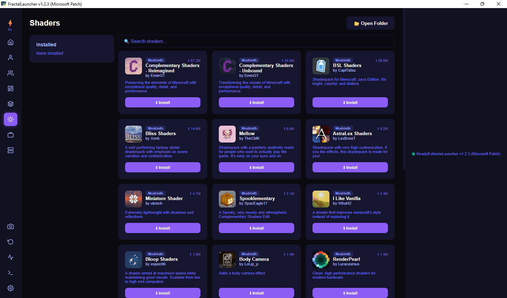
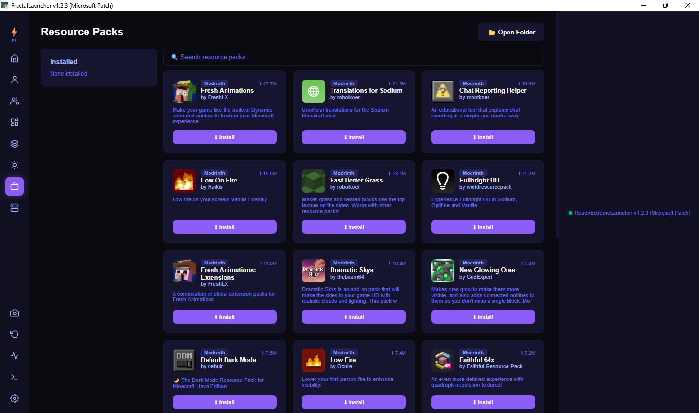
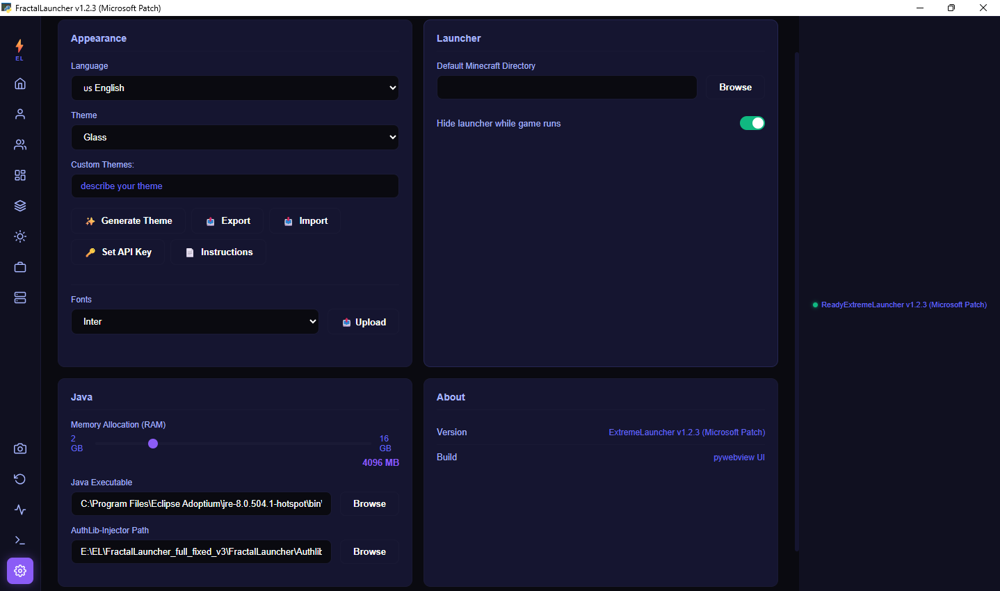

FractalLauncher is a free, open-source launcher for Microsoft and offline accounts — profiles, skins, capes, mods, shaders, resource packs, backups and diagnostics in one place. Made by TheExtreme_Ray.

FractalLauncher set out to be a replacement for TL — every feature judged from the consumer's point of view.
Every profile keeps its own version, loader and memory allocation. Test something risky without ever touching your main setup.
Sign in with a Microsoft account or play on a cracked one — both live side by side in the accounts manager, and switching is one click.
Upload any PNG skin and apply it to offline accounts through AuthLib — Classic or Slim model, with a live preview. Skins for offline accounts don't carry into multiplayer; that limit is stated up front, not buried.
Built-in cape support for offline accounts with a set of preset capes ready to equip. No payments, no unlocks, no tiers.
Search Modrinth and install in one click. Everything you have installed sits in the same panel with toggles and instant removal.
Fetch shaderpacks directly from Modrinth — from lightweight performance picks to full visual overhauls.
The same Modrinth flow for resource packs. Browse, install, done — no browser tabs, no manual folder digging.
A built-in list of recommended servers, so finding somewhere to play doesn't mean hunting IPs on forums.
Browse every captured moment, then crop, blur or draw over screenshots right inside the launcher.
Snapshot your current save in one click before a big experiment. Your worlds stay yours.
Checks that your Java directory is set, that AuthLib is in place, that no installed mods are incompatible — plus your OS and allocated RAM. Problems get found before they bite.
Every launch and game log in one console — copy anything in a single click, and hit the kill-process button when a game hangs.
Multiple languages, built-in and custom themes — describe one and generate it — custom fonts, Java directories, and an about panel that tells you exactly what's running.
Real captures from FractalLauncher. Click any shot to view it full size.







A YouTuber working hard to make a difference, TheExtreme_Ray builds FractalLauncher from the consumer's point of view — every feature is judged by how it feels to actually use, then refined until it's right. The whole thing is open source, and a Developer Edition ships every single file, including the ones used to build the app into an .exe and an installer.
Safety as a top priority — in the logo, and in the code.
Download FractalLauncher, add an account, pick a profile, press launch. Free, and it stays that way.
Download for Windows ↓ WINDOWSThe complete source — Python and pywebview UI included, with all build files used to produce the .exe and the installer. Read it, audit it, fork it, build it yourself.
Get the source → FULL SOURCE + BUILD FILESEvery file, every subsystem — a complete technical read-through of FractalLauncher. Architecture, the 61-method bridge, build pipeline, known issues, and a full file map.
See documentation → FULL TECHNICAL DOCSA free, open-source Minecraft launcher written in Python, made by TheExtreme_Ray. It supports both Microsoft and offline (cracked) accounts, and bundles profiles, skins, capes, mods, shaders, resource packs, backups, diagnostics and a console into one app.
Yes — offline accounts are first-class. You can set skins through AuthLib and equip free preset capes. One honest limitation: offline skins and capes only apply in single-player, not on multiplayer servers.
Yes. Microsoft and offline accounts live side by side in the accounts manager, and you can switch between them at any time.
Directly from Modrinth, fetched inside the launcher. Search, install and manage everything from the same panel — no manual folder work required.
FractalLauncher set out to be a replacement for TL — the features people relied on, plus more — developed openly, with the consumer's point of view driving every decision and safety treated as the top priority.
Safety is the project's stated top priority — and because the entire thing is open source (Developer Edition included, build files and all), you can verify exactly what runs on your machine instead of taking anyone's word for it.
Whether your Java directory is set, whether the AuthLib directory is set, whether any installed mods are incompatible — plus your operating system and allocated RAM.
Open the console and press the kill-process button to end it cleanly. If you're reporting a bug, every log line can be copied with one click.
It's built and shipped for Windows, available as an executable or an installer. There's a packaged Linux Zip file containing the source code modified to run on that platform, the instructions will guide you through it. And since it's fully open source — build files included — you can also run it straight from source on Windows too.